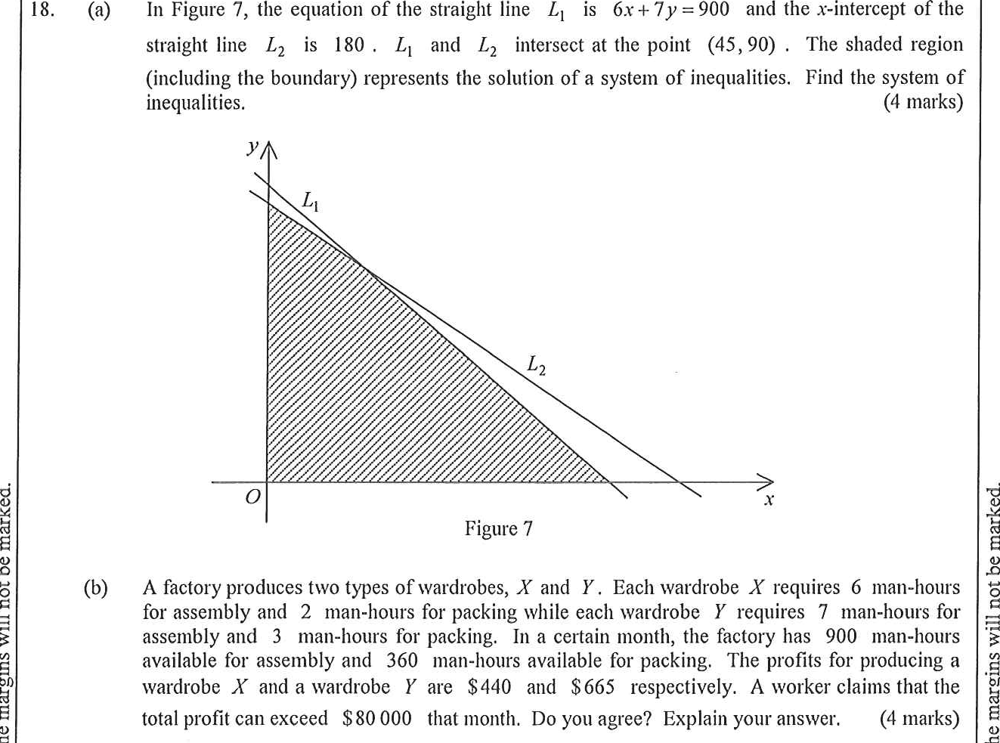

Step 1 — Figure 7: the given shaded feasible region.
Topic 9: Inequalities and Linear Programming
(a) In Figure 7, the equation of the straight line $L_1$ is $6x+7y=900$ and the $x$-intercept of the straight line $L_2$ is $180$. $L_1$ and $L_2$ intersect at the point $(45,\,90)$. The shaded region (including the boundary) represents the solution of a system of inequalities. Find the system of inequalities. [4 marks]
(b) A factory produces two types of wardrobes, $X$ and $Y$. Each wardrobe $X$ requires $6$ man-hours for assembly and $2$ man-hours for packing while each wardrobe $Y$ requires $7$ man-hours for assembly and $3$ man-hours for packing. In a certain month, the factory has $900$ man-hours available for assembly and $360$ man-hours available for packing. The profits for producing a wardrobe $X$ and a wardrobe $Y$ are $\$440$ and $\$665$ respectively. A worker claims that the total profit can exceed $\$80\,000$ that month. Do you agree? Explain your answer. [4 marks]

The shaded region in Figure 7 is bounded by:
Use the two known points $A(180,\,0)$ and $P(45,\,90)$:
Point–slope form using $P(45,\,90)$:
Test the origin $O(0,\,0)$, which is inside the shaded region:
| Line | Value at $(0,0)$ | With boundary |
|---|---|---|
| $6x+7y=900$ | $0\le 900$ | $6x+7y\le 900$ |
| $2x+3y=360$ | $0\le 360$ | $2x+3y\le 360$ |
Since the feasible region is in the first quadrant (under $L_1$,
under $L_2$, right of the $y$-axis, above the $x$-axis):
Let $x$ and $y$ be the numbers of wardrobes $X$ and $Y$ produced that month ($x,\,y$ are non-negative integers).
Assembly hours and packing hours give exactly the same constraints:
Total profit (in dollars):
The region in Figure 7 has vertices:
Check: $L_1$ meets the $y$-axis at $y=900/7\approx128.6$ but $L_2$ caps it at $y=360/3=120$; $L_1$ meets the $x$-axis at $x=150$; $L_2$ meets it at $x=180$.
| Vertex $(x,y)$ | $P=440x+665y$ |
|---|---|
| $(0,\,0)$ | $440(0)+665(0)=0$ |
| $(0,\,120)$ | $440(0)+665(120)=79\,800$ |
| $(45,\,90)$ | $440(45)+665(90)=79\,650$ |
| $(150,\,0)$ | $440(150)+665(0)=66\,000$ |
The largest value is $79\,800 < 80\,000$.
Answer (a):
$\begin{cases} 6x+7y\le 900\\ 2x+3y\le 360\\ x\ge 0\\ y\ge 0\end{cases}$
Answer (b): The maximum profit is $\$79\,800$, so it cannot exceed $\$80\,000$ — the worker's claim is disagreed (not agreed).
Question. A factory produces two models of lamps, \(X\) and \(Y\). Each lamp \(X\) requires \(3\) man-hours for assembly and \(2\) man-hours for packing, while each lamp \(Y\) requires \(5\) man-hours for assembly and \(3\) man-hours for packing. In a certain month the factory has \(390\) man-hours available for assembly and \(240\) man-hours available for packing. The profits on a lamp \(X\) and a lamp \(Y\) are \(\$150\) and \(\$240\) respectively. A worker claims that the total profit can exceed \(\$19\,000\) that month. Do you agree? Explain your answer. [4 marks]